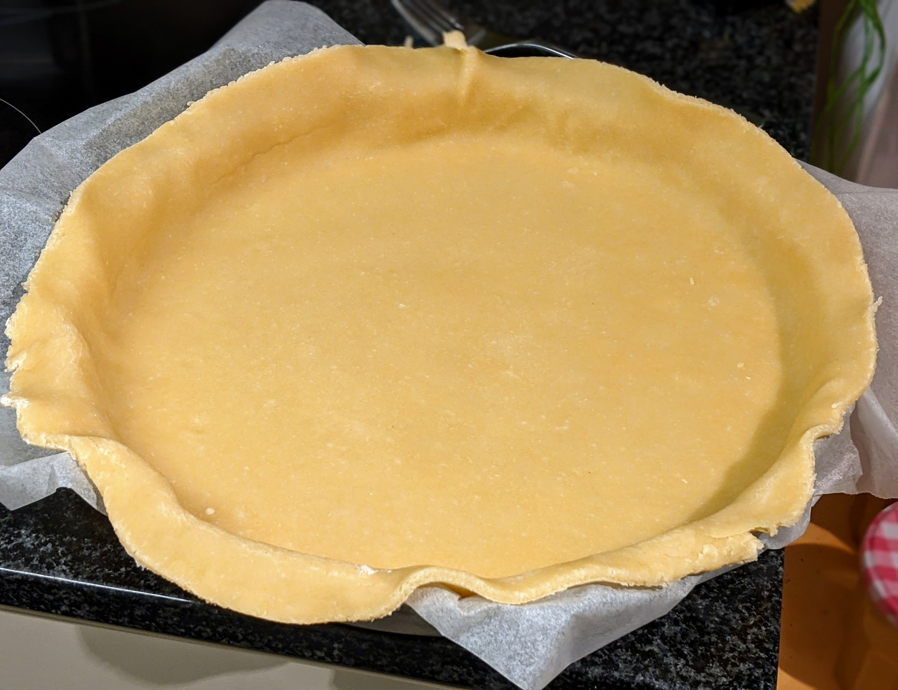

Pâte brisée

Pour une pâte :
- 200g de farine
- 100g de beurre
- Une pincée de sel
- 5-6cL de lait (ou d'eau)
- Couper le beurre en petits morceaux et le laisser à l'air quelques minutes pour qu'il ramolisse. On peut aussi le mettre au micro-ondes (à réglage très bas) quelques secondes, en surveillant bien — il ne faut surtout pas que le beurre fonde.
- Mélanger la farine et le sel dans un saladier, puis ajouter le beurre. Mélanger du bout des doigts et émietter pour que ça forme une sorte de semoule.
- Mettre le lait au micro-ondes quelques instants pour le tiédir. L'ajouter dans la pâte, mélanger, former une grosse boule. Il faut que la boule soit un peu humide, mais pas trop.
- Étaler la boule sur du papier sulfurisé fariné, en mettant un peu de farine sur le rouleau à pâtisserie pour que ça n'attache pas.
Remarque : ces proportions font une pâte de taille standard, pas trop grosse. Si on utilise un moule plus grand que la moyenne, ajouter 20% ou même 40% aux proportions.
Remarque 2 : pour faire cuire une pâte brisée à blanc, mettre du papier sulfurisé avec des billes de cuisson (ou des lentilles, ou des haricots secs) par-dessus, et faire cuire à 180°C pour environ 10-15 minutes (plutôt 10 pour une tarte qui va ensuite passer au four, plutôt 15 si c'est sa seule cuisson). Puis, sortir la pâte, du four, la badigeonner avec un peu de blanc d'œuf au pinceau, et la remettre au four 5-10 minutes pour que ça dore un peu.
Remarque 3 : pour une version sucrée de la pâte, on peut rajouter 50g de sucre en même temps que la farine. C'est bien de faire ça pour les tartes dont la garniture est un peu acide, genre citron ou groseilles.